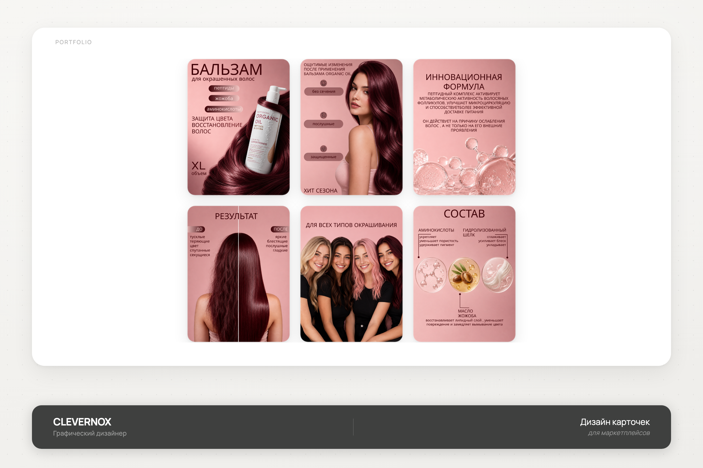
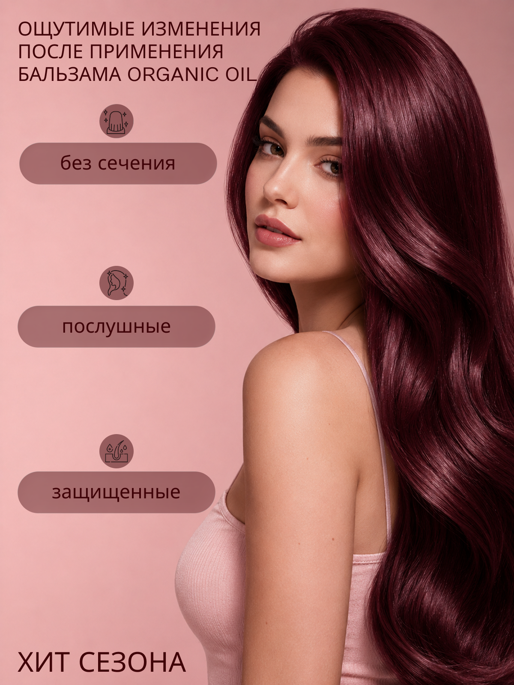
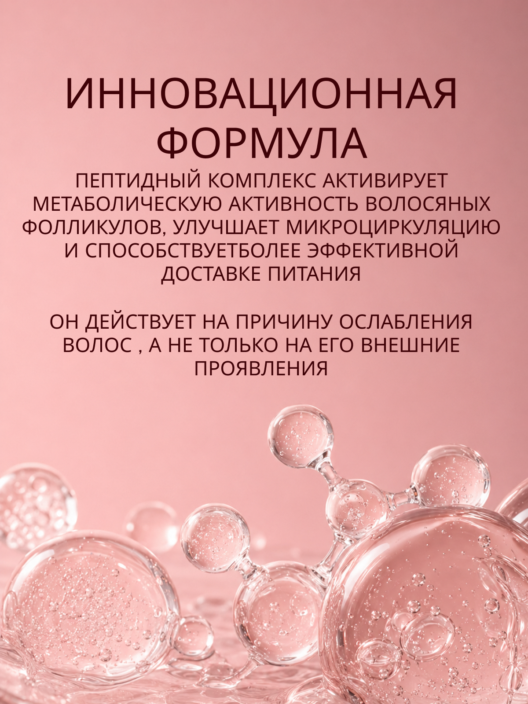
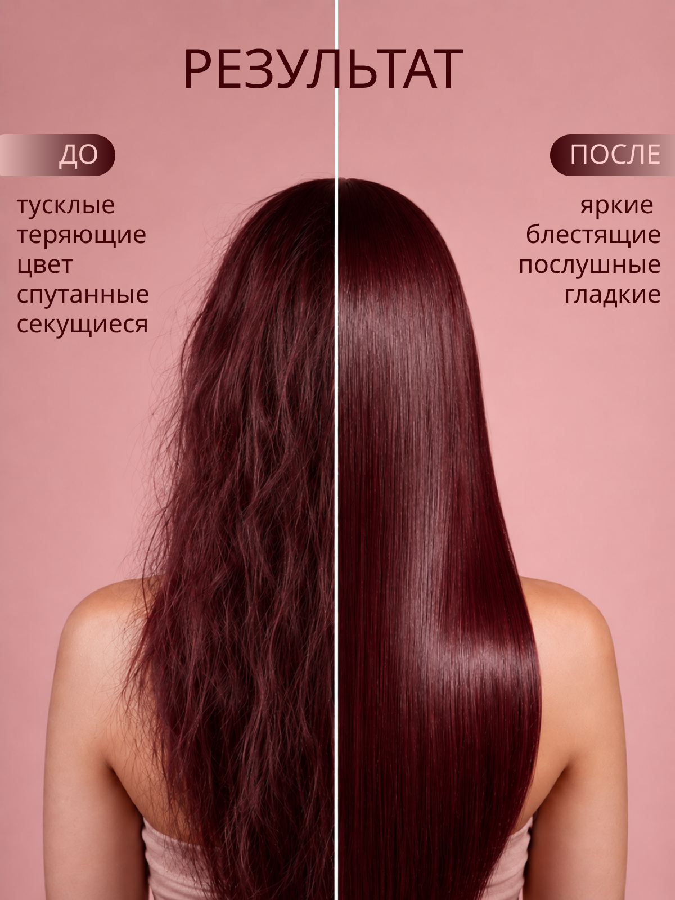
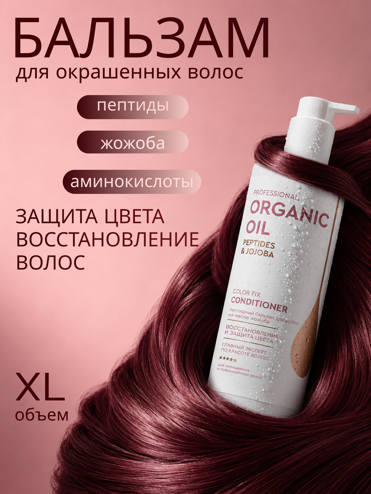
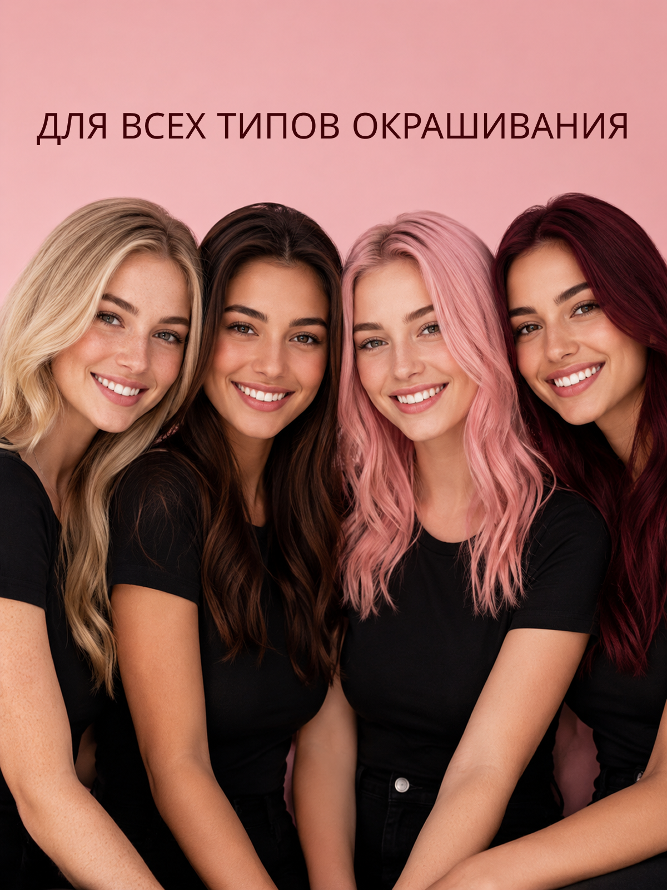
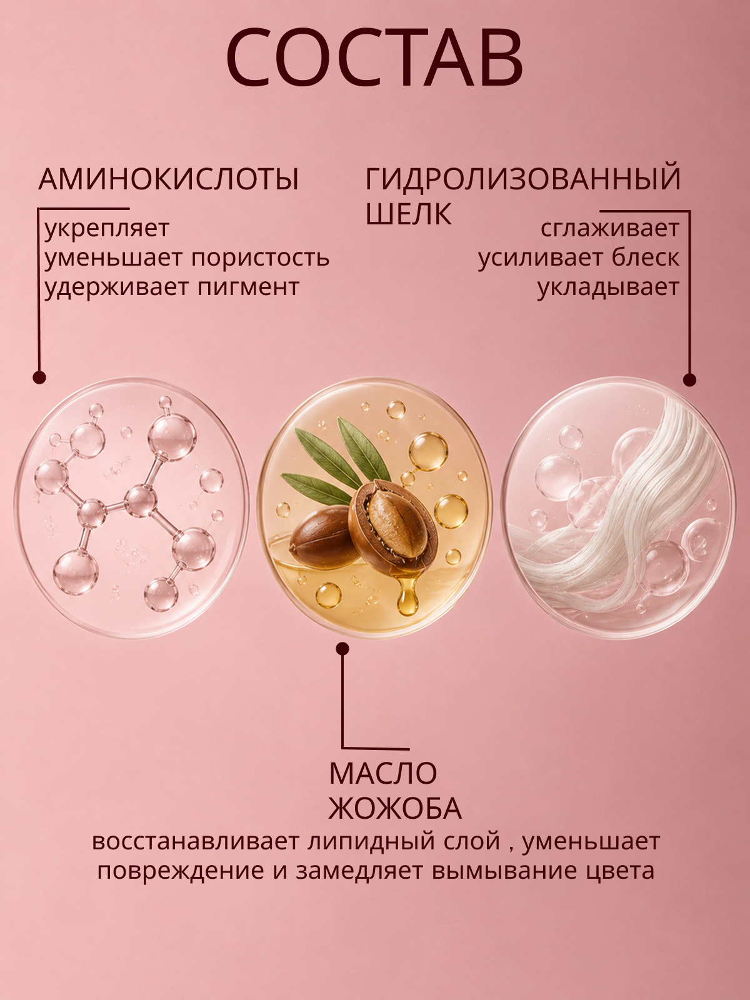

Organic Oil
Серия инфографических карточек для пептидного бальзама Organic Oil: до/после, формула и состав в едином розовом стиле линейки.

- Клиент
- Organic Oil — бренд профессионального ухода за волосами
- Задача
- Разработать серию карточек товара для маркетплейса под бальзам для окрашенных волос: продукт, эффект до/после, формула и состав — в едином узнаваемом стиле бренда.
- Роль
- Графический дизайнер: концепция серии, инфографика, типографика, компоновка предметной и лайфстайл-съёмки, подготовка под формат карточек маркетплейса.
Категория «уход за окрашенными волосами» на маркетплейсе перегружена однотипными баннерами с бутылкой на фоне волос — задачей было удержать этот узнаваемый код категории (бордовые волосы, розовый фон), но выстроить внутри него чёткую последовательность аргументов вместо простого «полки с флаконом».
Серия построена как воронка доказательств: первая карточка — продукт и три ключевых свойства (пептиды, жожоба, аминокислоты), вторая — эмоциональный результат крупным планом с иконками, третья — объяснение механизма действия формулы, четвёртая — визуальное до/после на одном кадре, пятая — расширение на разные типы окрашивания, шестая — детальный состав с макро-фото ингредиентов и описанием функции каждого. Розовый фон и бордовый цвет волос держат все шесть карточек как единую ленту при пролистывании.






Серия карточек последовательно провела покупателя от эмоционального образа результата к рациональным аргументам состава, сохранив единый фирменный розово-бордовый код категории бренда.